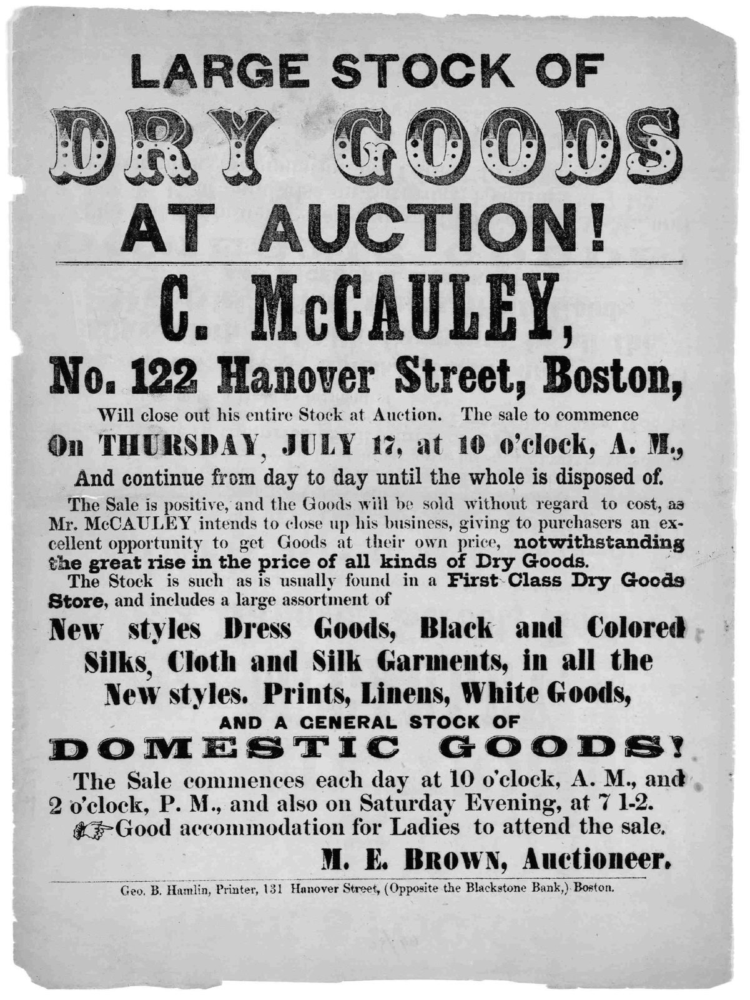

References / Poster / 401
“Large Stock of Dry Goods at Auction!” broadside
A Boston shop-closing bill of 1862 that turns a sale notice into a ladder of decorated, extended, condensed, and fat display faces.
- Source
- Library of Congress, Printed Ephemera Collection: Large stock of dry goods at auction!
- Creator
- Geo. B. Hamlin, printer, Boston (imprint)
- Made
- 1862
- Style
- Victorian typography (agent-proposed, not yet reviewed by a person)
- Moods
- Commercial, loud, busy
- Evidence
- Inspected the Library of Congress scan (Printed Ephemera Collection, Portfolio 69, Folder 50; 2582 × 3441 px).
- Reviewed
- Rights
- Open license, stored. License: public domain. Rights policy
Context
LoC catalogues the bill as 1 p., 30 × 22.5 cm, Boston, 1862, subject “Auction.” LoC 2020770660.
The text announces that C. McCauley of Hanover Street will close out his stock at auction from Thursday, 17 July, with M. E. Brown as auctioneer. The imprint reads “Geo. B. Hamlin, Printer, 131 Hanover Street, (Opposite the Blackstone Bank,) Boston.”
Observed
- “DRY GOODS” is set in a decorated letter with a black drop shade, a white face, a row of dots, and a dark band at the top of each letter.
- “LARGE STOCK OF” and “AT AUCTION!” use a wide sans-serif capital, and a single rule closes the head.
- “C. McCAULEY,” is a tall condensed slab; “No. 122 Hanover Street, Boston,” a mixed-case fat Clarendon.
- “DOMESTIC GOODS!” is an extended Egyptian with very wide letters, and “AND A GENERAL STOCK OF” a small wide sans-serif above it.
- A pointing hand leads into the line about accommodation for ladies.
- Body paragraphs mix roman and bold for single phrases. The display lines are centred, and the paragraphs are justified.
- Black ink on white paper, with show-through from the back of the sheet.
Why it belongs
The bill shows how a printer turned an ordinary trade notice into a spectacle with stock faces alone. The decorated headline is the only costly letter, and it goes on the product, not the shop name.
The change between wide and condensed faces is as strong as the change in size.
Borrow
Spend the one decorative face on the single word that sells, and keep the rest in plain heavy faces.
Pair a small wide line with a big wide line below it as a two-step heading.
Measured
Machine-extracted by tools/image-traits.py on . Full measurement.
- Mean chroma
- 0
- Palette
- #cdcdcd 46%
- #d8d8d8 12%
- #b4b4b4 7%
- #ffffff 6%
- #c0c0c0 5%
- #363636 3%
- #676767 3%
- #4d4d4d 3%

